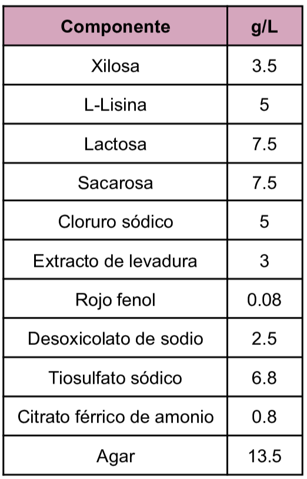
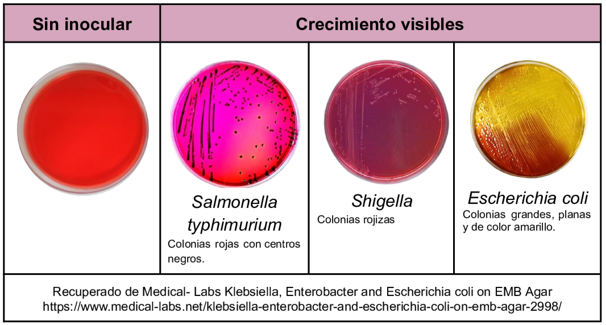

Medio selectivo y diferencial para Staphylococcus en muestras de alimentos, ambientales y clínicas.
Entre los componentes del medio se encuentran la glicina y el piruvato que son los agentes estimulantes del crecimiento del género ya mencionado, por otro lado el componente selectivo dentro del medio es el telurito y el cloruro de litio que inhiben el crecimiento de la microbiota dentro de las muestras además la reducción del telurito a teluro permite la identificación de Staphylococcus aureus por último la adición de yema de huevo como agente diferencial permite la observación de la reacción de la enzima lecitinasa (Fosfolipasa C) esta al actuar sobre la lecitina presente en la yema de huevo genera digliceridos y fosforilcolina resultando en un halo claro alrededor de la colonia.
Composición

pH a 25°C 6.8±0.3
Resultados Posibles
Para Staphylococcus aureus las colonias observadas son negras, brillantes, convexas y rodeadas por un halo claro derivado de la actividad de la lecitinasa. Para el caso de Staphylococcus coagulasa negativos tales como epidermidis se puede ver ausencia de crecimiento o en su caso colonias pequeñas grises sin presencia de halo.

Referencias
Aryal,S. (2022)Baird Parker Agar- Composition, Principle, Preparation, Results, Uses. https://microbenotes.com/baird-parker-agar/
BD (2006) BD Baird Parker Agar. https://amyd.quimica.unam.mx/pluginfile.php/9874/mod_folder/content/0/Agar%20Baird%20Parker.pdf
Romero, G. (2023) “Guía General de Medios de Cultivo Utilizados en la Industria” [Tesis de Licenciatura, Universidad Nacional Autónoma de México]. Repositorio DGBSDI. https://ru.dgb.unam.mx/server/api/core/bitstreams/30f99386-fb11-4b83-8931-b260bbcd5eef/content